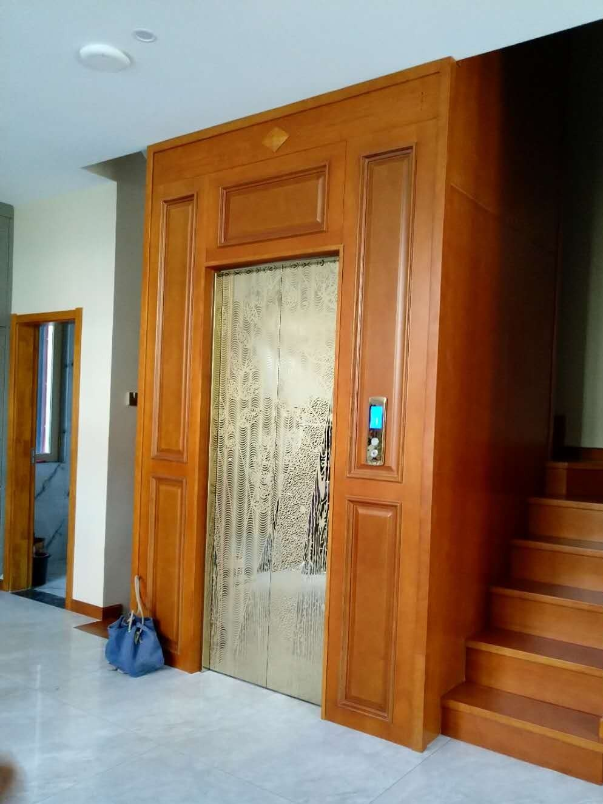
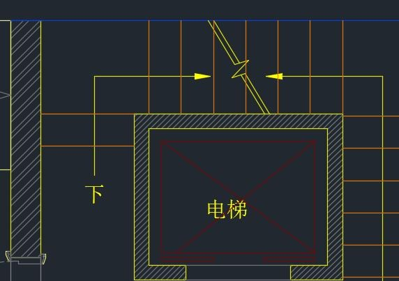
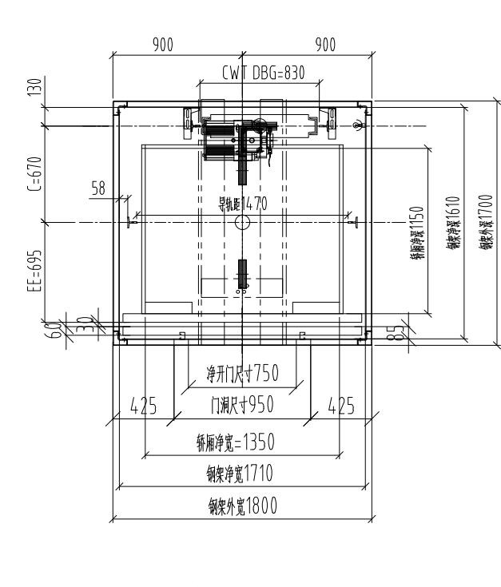
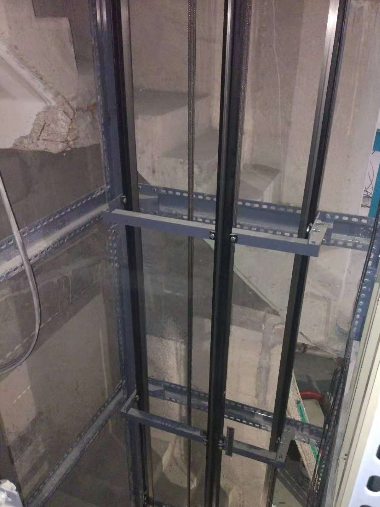
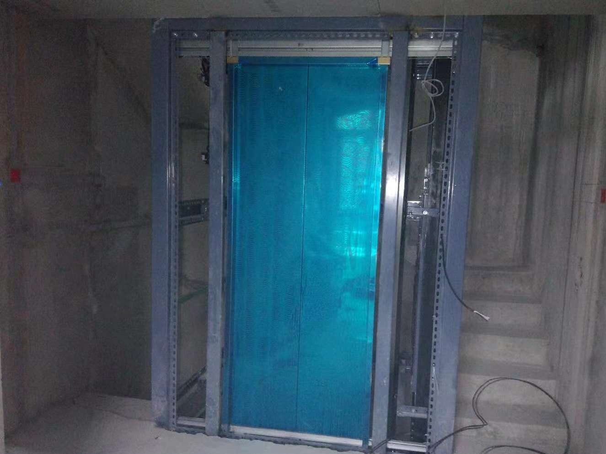
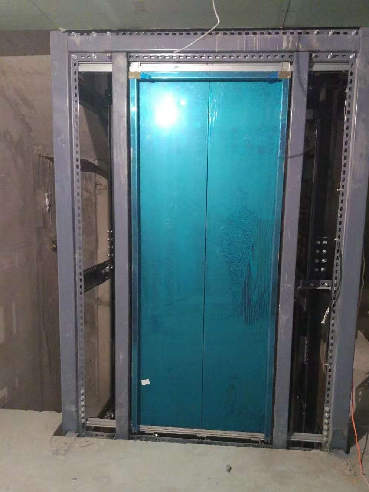
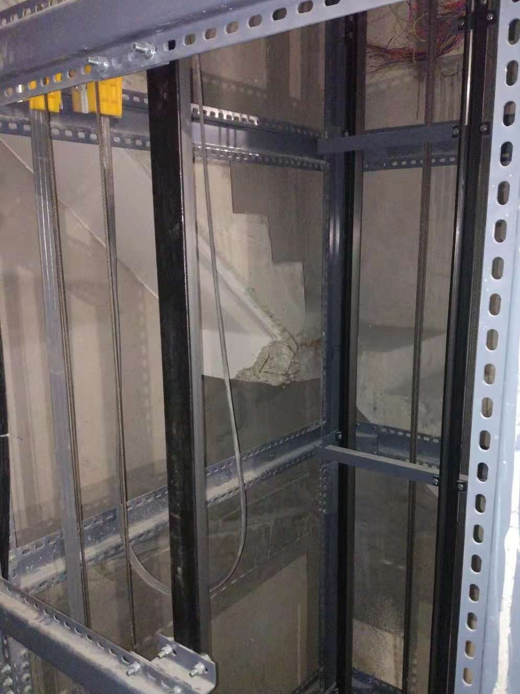

案例 / 合肥别墅电梯 / 楼梯中间加装
项目类型
别墅 / 楼梯中间加装
房屋场景
合肥旭辉湖山源著
现场问题
楼梯净宽与井道边界
方案重点
钢结构井道与开门方向
案例背景
合肥旭辉湖山源著属于典型的楼梯中间加装场景，最重要的问题不是“有没有电梯”，而是“怎么让楼梯还能好走，电梯也能装得稳”。
这个项目的参考价值在于，它把楼梯中间空间、钢结构井道和开门方向放到了同一张判断表里。
现场条件
| 项目 | 记录 |
|---|---|
| 项目类型 | 合肥旭辉湖山源著楼梯中间加装 |
| 空间特点 | 楼梯中间预留空间有限，需结合楼梯净宽判断 |
| 方案重点 | 钢结构井道、开门方向、通行动线 |
| 案例价值 | 适合参考楼梯中间加装逻辑 |
楼梯中间加装不是单纯找个空位放电梯，而是要把楼梯通行、井道尺寸和结构固定一起处理。
方案判断
如果楼梯中间空间有限，常见思路就是先判断钢结构井道能不能成立，再判断设备和开门方式。
- 先保留楼梯通行，再定电梯井道。
- 先判断钢结构固定点，再谈设备安装。
- 开门方向要和楼梯动线一起看。
对业主的参考价值
这类案例能帮助业主理解，楼梯中间加装并不是“挤进去就行”，而是要先把结构、尺寸和通行顺序整理清楚。
如果你家也有楼梯中间空间，先把井道预留、钢结构和开门方向想清楚，再去谈设备会更稳。
俞工点评
楼梯中间加装，最重要的是别把通行和结构弄乱。电梯如果影响了楼梯本身的安全和舒适，那方案就要重新评估。
常见问题FAQ
楼梯中间空间很小，还能做电梯吗？
要先看实际净尺寸和结构条件，不能只看平面图上的空位。
为什么楼梯中间加装经常要配钢结构井道？
因为很多楼梯中间空间不能直接承重，必须先解决结构固定和井道边界。
开门方向为什么这么重要？
开门方向会影响楼梯通行和使用体验，尤其在楼梯中间加装项目里更明显。
楼梯中间加装适合什么房子？
适合楼梯中空、跃层、别墅改造等项目，但还是要先做现场判断。
项目图片记录





图纸与尺寸参考



如果你家也是自建房、别墅或楼梯中间空间想加装家用电梯，建议先把现场照片发给俞工，根据井道、底坑、顶层高度和开门方向做一次初步判断。电话：15056952050。
先看现场条件，再谈方案和预算。
微信咨询俞工
扫码发送现场照片，先初步判断能不能装。
建议拍井道、楼梯、底坑和顶层高度。